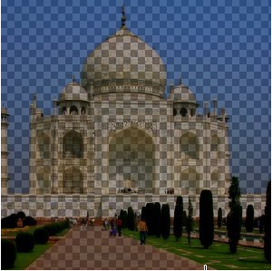
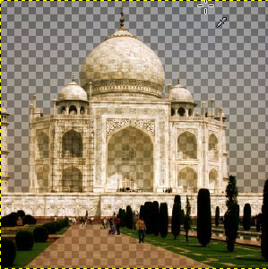
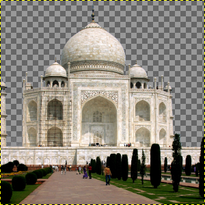

The Color to Alpha command makes transparent all pixels of the active layer that have a selected color. It attempts to preserve anti-aliasing information by using a partially intelligent algorithm that replaces weak color information with weak alpha information. In this way, areas that contain an element of the selected color maintain a blended appearance with their surrounding pixels.

- Presets, Blending Options, Preview, Merge filter, Split view
-
![[Note]](images/note.png)
Note These options are described in Section 8.1.2, “Colors Common Features”.
- Color
-
Clicking the color swatch provides a color selection dialog where you can select a color. You can also select a color using the eye dropper on the right.
“Color to alpha” comes with a GEGL option dialog under Toolbox. When the Sample average option is unchecked, color picker picks only one pixel color. When the option is checked, mouse pointer goes with a square limiting a pixel sample that determines a merged sample “color”. You can fix the square size directly in the slider, or using the + and - buttons, or the Up and Down keyboard keys.
Right clicking the color swatch displays a menu where you can select Foreground or Background colors, White or Black.
- Transparency threshold, Opacity threshold
-
-
Transparency: the limit below which colors become transparent.
-
Opacity: the limit above which colors become opaque.
Color to Alpha modifies the transparency (and color) of the pixels based on their distance from the selected background color (the “Color” option) — the closer they are to the background color, the more transparent they become, with the background color becoming fully transparent.
The transparency and opacity thresholds control how close colors should be to the background color before they become fully transparent, and how far they should be from the background color before they remain fully opaque, respectively. With the default values of 0 and 1, only the background color becomes fully transparent, and only the colors farthest away from the background color remain fully opaque.
For example, while the default values work well for removing a white background from a black object, if the object is gray instead [fig. 1] it will become semi-transparent [fig. 2], since gray is midway between white and black. Lowering the opacity threshold to 0.5 fixes that, by keeping all pixels that are gray or darker (all pixels whose distance from white is 0.5 or more, on a [0,1] scale) fully opaque [fig. 3].
The transparency threshold works similarly: raising it causes more colors in the neighborhood of the background color to become fully transparent. This is mostly useful with noisy images, in which the background is not fully solid. However, unlike in other cases, when the transparency threshold is above 0, recomposing the result against the background color no longer reproduces the exact same image.
At the risk of being a bit technical, this can be visualized by thinking of the RGB cube. The background color is a point within the cube, and the transparency and opacity thresholds are two sub-cubes centered around the background color. Everything inside the transparency-threshold cube becomes fully transparent, everything outside the opacity-threshold cube remains fully opaque, and everything in between gradually transitions from transparent to opaque. In image [fig. 4] you can see the Red-Green face of the RGB cube. (1) is the background color (Red=0.5, Green=0.5, Blue=0.0), (2) is the transparency threshold (set to 0.1), and (3) is the opacity threshold (set to 0.4).
-


-
Add an alpha channel to your image if necessary in the image window menu under → → .
-
Open Color to alpha.
Figure 16.229. Color to alpha open with default options

Original image with alpha channel

Original image with an alpha channel. Color to alpha with default options: “Color” is white. Opacity threshold = 1.00 is maximum, and so only the colors farthest away from the “Color” remain fully opaque. Transparency threshold = 0 and so the “Color” is fully transparent.
-
Uncheck Preview option.
-
Pick color, here the sky.
-
Re-check Preview option.

“Color” from the sky. Default thresholds.
-
Adapt Transparency and Opacity thresholds proceeding by trial and error.

Only the sky is transparent.

Opacity threshold was decreased to make farthest colors (monument, trees and road) fully opaque. Transparency threshold was increased to make “Color” fully transparent and delete some imperfections in the sky.